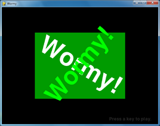
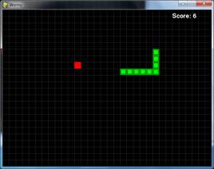
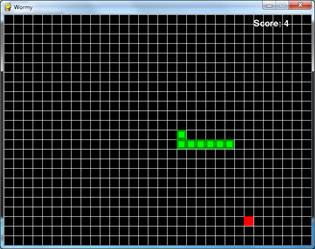
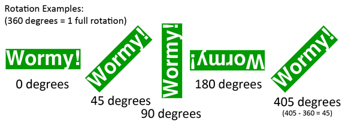

 
Wormy is a Nibbles clone. The player starts out controlling a short worm that is constantly moving around the screen. The player cannot stop or slow down the worm, but they can control which direction it turns. A red apple appears randomly on the screen, and the player must move the worm so that it eats the apple. Each time the worm eats an apple, the worm grows longer by one segment and a new apply randomly appears on the screen. The game is over if the worm crashes into itself or the edges of the screen.
This source code can be downloaded from http://invpy.com/wormy.py. If you get any error messages, look at the line number that is mentioned in the error message and check your code for any typos. You can also copy and paste your code into the web form at http://invpy.com/diff/wormy to see if the differences between your code and the code in the book.
2. # By Al Sweigart al@inventwithpython.com
3. # http://inventwithpython.com/pygame
4. # Creative Commons BY-NC-SA 3.0 US
5.
6. import random, pygame, sys
7. from pygame.locals import *
8.
9. FPS = 15
10. WINDOWWIDTH = 640
11. WINDOWHEIGHT = 480
12. CELLSIZE = 20
13. assert WINDOWWIDTH % CELLSIZE == 0, "Window width must be a multiple of cell size."
14. assert WINDOWHEIGHT % CELLSIZE == 0, "Window height must be a multiple of cell size."
15. CELLWIDTH = int(WINDOWWIDTH / CELLSIZE)
16. CELLHEIGHT = int(WINDOWHEIGHT / CELLSIZE)
17.
18. # R G B
19. WHITE = (255, 255, 255)
20. BLACK = ( 0, 0, 0)
21. RED = (255, 0, 0)
22. GREEN = ( 0, 255, 0)
23. DARKGREEN = ( 0, 155, 0)
24. DARKGRAY = ( 40, 40, 40)
25. BGCOLOR = BLACK
26.
27. UP = 'up'
28. DOWN = 'down'
29. LEFT = 'left'
30. RIGHT = 'right'
31.
32. HEAD = 0 # syntactic sugar: index of the worm's head
33.
34. def main():
35. global FPSCLOCK, DISPLAYSURF, BASICFONT
36.
37. pygame.init()
38. FPSCLOCK = pygame.time.Clock()
39. DISPLAYSURF = pygame.display.set_mode((WINDOWWIDTH, WINDOWHEIGHT))
40. BASICFONT = pygame.font.Font('freesansbold.ttf', 18)
41. pygame.display.set_caption('Wormy')
42.
43. showStartScreen()
44. while True:
45. runGame()
46. showGameOverScreen()
47.
48.
49. def runGame():
50. # Set a random start point.
51. startx = random.randint(5, CELLWIDTH - 6)
52. starty = random.randint(5, CELLHEIGHT - 6)
53. wormCoords = [{'x': startx, 'y': starty},
54. {'x': startx - 1, 'y': starty},
55. {'x': startx - 2, 'y': starty}]
56. direction = RIGHT
57.
58. # Start the apple in a random place.
59. apple = getRandomLocation()
60.
61. while True: # main game loop
62. for event in pygame.event.get(): # event handling loop
63. if event.type == QUIT:
64. terminate()
65. elif event.type == KEYDOWN:
66. if (event.key == K_LEFT or event.key == K_a) and direction != RIGHT:
67. direction = LEFT
68. elif (event.key == K_RIGHT or event.key == K_d) and direction != LEFT:
69. direction = RIGHT
70. elif (event.key == K_UP or event.key == K_w) and direction != DOWN:
71. direction = UP
72. elif (event.key == K_DOWN or event.key == K_s) and direction != UP:
73. direction = DOWN
74. elif event.key == K_ESCAPE:
75. terminate()
76.
77. # check if the worm has hit itself or the edge
78. if wormCoords[HEAD]['x'] == -1 or wormCoords[HEAD]['x'] == CELLWIDTH or wormCoords[HEAD]['y'] == -1 or wormCoords[HEAD]['y'] == CELLHEIGHT:
79. return # game over
80. for wormBody in wormCoords[1:]:
81. if wormBody['x'] == wormCoords[HEAD]['x'] and wormBody['y'] == wormCoords[HEAD]['y']:
82. return # game over
83.
84. # check if worm has eaten an apply
85. if wormCoords[HEAD]['x'] == apple['x'] and wormCoords[HEAD]['y'] == apple['y']:
86. # don't remove worm's tail segment
87. apple = getRandomLocation() # set a new apple somewhere
88. else:
89. del wormCoords[-1] # remove worm's tail segment
90.
91. # move the worm by adding a segment in the direction it is moving
92. if direction == UP:
93. newHead = {'x': wormCoords[HEAD]['x'], 'y': wormCoords[HEAD]['y'] - 1}
94. elif direction == DOWN:
95. newHead = {'x': wormCoords[HEAD]['x'], 'y': wormCoords[HEAD]['y'] + 1}
96. elif direction == LEFT:
97. newHead = {'x': wormCoords[HEAD]['x'] - 1, 'y': wormCoords[HEAD]['y']}
98. elif direction == RIGHT:
99. newHead = {'x': wormCoords[HEAD]['x'] + 1, 'y': wormCoords[HEAD]['y']}
100. wormCoords.insert(0, newHead)
101. DISPLAYSURF.fill(BGCOLOR)
102. drawGrid()
103. drawWorm(wormCoords)
104. drawApple(apple)
105. drawScore(len(wormCoords) - 3)
106. pygame.display.update()
107. FPSCLOCK.tick(FPS)
108.
109. def drawPressKeyMsg():
110. pressKeySurf = BASICFONT.render('Press a key to play.', True, DARKGRAY)
111. pressKeyRect = pressKeySurf.get_rect()
112. pressKeyRect.topleft = (WINDOWWIDTH - 200, WINDOWHEIGHT - 30)
113. DISPLAYSURF.blit(pressKeySurf, pressKeyRect)
114.
115.
116. def checkForKeyPress():
117. if len(pygame.event.get(QUIT)) > 0:
118. terminate()
119.
120. keyUpEvents = pygame.event.get(KEYUP)
121. if len(keyUpEvents) == 0:
122. return None
123. if keyUpEvents[0].key == K_ESCAPE:
124. terminate()
125. return keyUpEvents[0].key
126.
127.
128. def showStartScreen():
129. titleFont = pygame.font.Font('freesansbold.ttf', 100)
130. titleSurf1 = titleFont.render('Wormy!', True, WHITE, DARKGREEN)
131. titleSurf2 = titleFont.render('Wormy!', True, GREEN)
132.
133. degrees1 = 0
134. degrees2 = 0
135. while True:
136. DISPLAYSURF.fill(BGCOLOR)
137. rotatedSurf1 = pygame.transform.rotate(titleSurf1, degrees1)
138. rotatedRect1 = rotatedSurf1.get_rect()
139. rotatedRect1.center = (WINDOWWIDTH / 2, WINDOWHEIGHT / 2)
140. DISPLAYSURF.blit(rotatedSurf1, rotatedRect1)
141.
142. rotatedSurf2 = pygame.transform.rotate(titleSurf2, degrees2)
143. rotatedRect2 = rotatedSurf2.get_rect()
144. rotatedRect2.center = (WINDOWWIDTH / 2, WINDOWHEIGHT / 2)
145. DISPLAYSURF.blit(rotatedSurf2, rotatedRect2)
146.
147. drawPressKeyMsg()
148.
149. if checkForKeyPress():
150. pygame.event.get() # clear event queue
151. return
152. pygame.display.update()
153. FPSCLOCK.tick(FPS)
154. degrees1 += 3 # rotate by 3 degrees each frame
155. degrees2 += 7 # rotate by 7 degrees each frame
156.
157.
158. def terminate():
159. pygame.quit()
160. sys.exit()
161.
162.
163. def getRandomLocation():
164. return {'x': random.randint(0, CELLWIDTH - 1), 'y': random.randint(0, CELLHEIGHT - 1)}
165.
166.
167. def showGameOverScreen():
168. gameOverFont = pygame.font.Font('freesansbold.ttf', 150)
169. gameSurf = gameOverFont.render('Game', True, WHITE)
170. overSurf = gameOverFont.render('Over', True, WHITE)
171. gameRect = gameSurf.get_rect()
172. overRect = overSurf.get_rect()
173. gameRect.midtop = (WINDOWWIDTH / 2, 10)
174. overRect.midtop = (WINDOWWIDTH / 2, gameRect.height + 10 + 25)
175.
176. DISPLAYSURF.blit(gameSurf, gameRect)
177. DISPLAYSURF.blit(overSurf, overRect)
178. drawPressKeyMsg()
179. pygame.display.update()
180. pygame.time.wait(500)
181. checkForKeyPress() # clear out any key presses in the event queue
182.
183. while True:
184. if checkForKeyPress():
185. pygame.event.get() # clear event queue
186. return
187.
188. def drawScore(score):
189. scoreSurf = BASICFONT.render('Score: %s' % (score), True, WHITE)
190. scoreRect = scoreSurf.get_rect()
191. scoreRect.topleft = (WINDOWWIDTH - 120, 10)
192. DISPLAYSURF.blit(scoreSurf, scoreRect)
193.
194.
195. def drawWorm(wormCoords):
196. for coord in wormCoords:
197. x = coord['x'] * CELLSIZE
198. y = coord['y'] * CELLSIZE
199. wormSegmentRect = pygame.Rect(x, y, CELLSIZE, CELLSIZE)
200. pygame.draw.rect(DISPLAYSURF, DARKGREEN, wormSegmentRect)
201. wormInnerSegmentRect = pygame.Rect(x + 4, y + 4, CELLSIZE - 8, CELLSIZE - 8)
202. pygame.draw.rect(DISPLAYSURF, GREEN, wormInnerSegmentRect)
203.
204.
205. def drawApple(coord):
206. x = coord['x'] * CELLSIZE
207. y = coord['y'] * CELLSIZE
208. appleRect = pygame.Rect(x, y, CELLSIZE, CELLSIZE)
209. pygame.draw.rect(DISPLAYSURF, RED, appleRect)
210.
211.
212. def drawGrid():
213. for x in range(0, WINDOWWIDTH, CELLSIZE): # draw vertical lines
214. pygame.draw.line(DISPLAYSURF, DARKGRAY, (x, 0), (x, WINDOWHEIGHT))
215. for y in range(0, WINDOWHEIGHT, CELLSIZE): # draw horizontal lines
216. pygame.draw.line(DISPLAYSURF, DARKGRAY, (0, y), (WINDOWWIDTH, y))
217.
218.
219. if __name__ == '__main__':
220. main()

If you play the game a little, you’ll notice that the apple and the segments of the worm’s body always fit along a grid of lines. We will call each of the squares in this grid a cell (it’s not always what a space in a grid is called, it’s just a name I came up with). The cells have their own Cartesian coordinate system, with (0, 0) being the top left cell and (31, 23) being the bottom right cell.
1. # Wormy (a Nibbles clone)
2. # By Al Sweigart al@inventwithpython.com
3. # http://inventwithpython.com/pygame
4. # Creative Commons BY-NC-SA 3.0 US
5.
6. import random, pygame, sys
7. from pygame.locals import *
8.
9. FPS = 15
10. WINDOWWIDTH = 640
11. WINDOWHEIGHT = 480
12. CELLSIZE = 20
13. assert WINDOWWIDTH % CELLSIZE == 0, "Window width must be a multiple of cell size."
14. assert WINDOWHEIGHT % CELLSIZE == 0, "Window height must be a multiple of cell size."
15. CELLWIDTH = int(WINDOWWIDTH / CELLSIZE)
16. CELLHEIGHT = int(WINDOWHEIGHT / CELLSIZE)
The code at the start of the program just sets up some constant variables used in the game. The width and height of the cells are stored in CELLSIZE. The assert statements on lines 13 and 14 ensure that the cells fit perfectly in the window. For example, if the CELLSIZE was 10 and the WINDOWWIDTH or WINDOWHEIGHT constants were set to 15, then only 1.5 cells could fit. The assert statements make sure that only a whole integer number of cells fits in the window.
18. # R G B
19. WHITE = (255, 255, 255)
20. BLACK = ( 0, 0, 0)
21. RED = (255, 0, 0)
22. GREEN = ( 0, 255, 0)
23. DARKGREEN = ( 0, 155, 0)
24. DARKGRAY = ( 40, 40, 40)
25. BGCOLOR = BLACK
26.
27. UP = 'up'
28. DOWN = 'down'
29. LEFT = 'left'
30. RIGHT = 'right'
31.
32. HEAD = 0 # syntactic sugar: index of the worm's head
Some more constants are set on lines 19 to 32. The HEAD constant will be explained later in this chapter.
34. def main():
35. global FPSCLOCK, DISPLAYSURF, BASICFONT
36.
37. pygame.init()
38. FPSCLOCK = pygame.time.Clock()
39. DISPLAYSURF = pygame.display.set_mode((WINDOWWIDTH, WINDOWHEIGHT))
40. BASICFONT = pygame.font.Font('freesansbold.ttf', 18)
41. pygame.display.set_caption('Wormy')
42.
43. showStartScreen()
44. while True:
45. runGame()
46. showGameOverScreen()
In the Wormy game program, we’ve put the main part of the code in a function called runGame(). This is because we only want to show the “start screen” (the animation with the rotating “Wormy” text) once when the program starts (by calling the showStartScreen() function). Then we want to call runGame(), which will start a game of Wormy. This function will return when the player’s worm collides into a wall or into itself and causes a game over.
At that point we will show the game over screen by calling showGameOverScreen(). When that function call returns, the loop goes back to the start and calls runGame() again. The while loop on line 44 will loop forever until the program terminates.
49. def runGame():
50. # Set a random start point.
51. startx = random.randint(5, CELLWIDTH - 6)
52. starty = random.randint(5, CELLHEIGHT - 6)
53. wormCoords = [{'x': startx, 'y': starty},
54. {'x': startx - 1, 'y': starty},
55. {'x': startx - 2, 'y': starty}]
56. direction = RIGHT
57.
58. # Start the apple in a random place.
59. apple = getRandomLocation()
At the beginning of a game, we want the worm to start in a random position (but not too close to the edges of the board) so we store a random coordinate in startx and starty. (Remember that CELLWIDTH and CELLHEIGHT is the number of cells wide and high the window is, not the number of pixels wide and high).
The body of the worm will be stored in a list of dictionary values. There will be one dictionary value per body segment of the worm. The dictionary will have keys 'x' and 'y' for the XY coordinates of that body segment. The head of the body to be at startx and starty. The other two body segments will be one and two cells to the left of the head.
The head of the worm will always be the body part at wormCoords[0]. To make this code more readable, we’ve set the HEAD constant to 0 on line 32, so that we can use wormCoords[HEAD] instead of wormCoords[0].
61. while True: # main game loop
62. for event in pygame.event.get(): # event handling loop
63. if event.type == QUIT:
64. terminate()
65. elif event.type == KEYDOWN:
66. if (event.key == K_LEFT or event.key == K_a) and direction != RIGHT:
67. direction = LEFT
68. elif (event.key == K_RIGHT or event.key == K_d) and direction != LEFT:
69. direction = RIGHT
70. elif (event.key == K_UP or event.key == K_w) and direction != DOWN:
71. direction = UP
72. elif (event.key == K_DOWN or event.key == K_s) and direction != UP:
73. direction = DOWN
74. elif event.key == K_ESCAPE:
75. terminate()
Line 61 is the start of the main game loop and line 62 is the start of the event handling loop. If the event is a QUIT event, then we call terminate() (which we’ve defined the same as the terminate() function in the previous game programs).
Otherwise, if the event is a KEYDOWN event, then we check if the key that was pressed down is an arrow key or a WASD key. We want an additional check so that the worm does not turn in on itself. For example, if the worm is moving left, then if the player accidentally presses the right arrow key, the worm would immediate start going right and crash into itself.
That is why we have this check for the current value of the direction variable. That way, if the player accidentally presses an arrow key that would cause them to immediately crash the worm, we just ignore that key press.
77. # check if the worm has hit itself or the edge
78. if wormCoords[HEAD]['x'] == -1 or wormCoords[HEAD]['x'] == CELLWIDTH or wormCoords[HEAD]['y'] == -1 or wormCoords[HEAD]['y'] == CELLHEIGHT:
79. return # game over
80. for wormBody in wormCoords[1:]:
81. if wormBody['x'] == wormCoords[HEAD]['x'] and wormBody['y'] == wormCoords[HEAD]['y']:
82. return # game over
The worm has crashed when the head has moved off the edge of the grid or when the head moves onto a cell that is already occupied by another body segment.
We can check if the head has moved off the edge of the grid by seeing if either the X coordinate of the head (which is stored in wormCoords[HEAD]['x']) is -1 (which is past the left edge of the grid) or equal to CELLWIDTH (which is past the right edge, since the rightmost X cell coordinate is one less than CELLWIDTH).
The head has also moved off the grid if the Y coordinate of the head (which is stored in wormCoords[HEAD]['y']) is either -1 (which is past the top edge) or CELLHEIGHT (which is past the bottom edge).
All we have to do to end the current game is to return out of runGame(). When runGame() returns to the function call in main(), the next line after the runGame() call (line 46) is the call to showGameOverScreen() which makes the large “Game Over” text appear. This is why we have the return statement on line 79.
Line 80 loops through every body segment in wormCoords after the head (which is at index 0. This is why the for loop iterates over wormCoords[1:] instead of just wormCoords). If both the 'x' and 'y' values of the body segment are the same as the 'x' and 'y' of the head, then we also end the game by returning out of the runGame() function.
84. # check if worm has eaten an apply
85. if wormCoords[HEAD]['x'] == apple['x'] and wormCoords[HEAD]['y'] == apple['y']:
86. # don't remove worm's tail segment
87. apple = getRandomLocation() # set a new apple somewhere
88. else:
89. del wormCoords[-1] # remove worm's tail segment
We do a similar collision detection check between the head of the worm and the apple’s XY coordinates. If they match, we set the coordinates of the apple to a random new location (which we get from the return value of getRandomLocation()).
If the head has not collided with an apple, then we delete the last body segment in the wormCoords list. Remember that negative integers for indexes count from the end of the list. So while 0 is the index of the first item in the list and 1 is for the second item, -1 is for the last item in the list and -2 is for the second to last item.
The code on lines 91 to 100 (described next in the “Moving the Worm” section) will add a new body segment (for the head) in the direction that the worm is going. This will make the worm one segment longer. By not deleting the last body segment when the worm eats an apple, the overall length of the worm increases by one. But when line 89 deletes the last body segment, the size remains the same because a new head segment is added right afterwards.
91. # move the worm by adding a segment in the direction it is moving
92. if direction == UP:
93. newHead = {'x': wormCoords[HEAD]['x'], 'y': wormCoords[HEAD]['y'] - 1}
94. elif direction == DOWN:
95. newHead = {'x': wormCoords[HEAD]['x'], 'y': wormCoords[HEAD]['y'] + 1}
96. elif direction == LEFT:
97. newHead = {'x': wormCoords[HEAD]['x'] - 1, 'y': wormCoords[HEAD]['y']}
98. elif direction == RIGHT:
99. newHead = {'x': wormCoords[HEAD]['x'] + 1, 'y': wormCoords[HEAD]['y']}
100. wormCoords.insert(0, newHead)
To move the worm, we add a new body segment to the beginning of the wormCoords list. Because the body segment is being added to the beginning of the list, it will become the new head. The coordinates of the new head will be right next to the old head’s coordinates. Whether 1 is added or subtracted from either the X or Y coordinate depends on the direction the worm was going.
This new head segment is added to wormCoords with the insert() list method on line 100.
Unlike the append() list method that can only add items to the end of a list, the insert() list method can add items anywhere inside the list. The first parameter for insert() is the index where the item should go (all the items originally at this index and after have their indexes increase by one). If the argument passed for the first parameter is larger than the length of the list, the item is simply added to the end of the list (just like what append() does). The second parameter for insert() is the item value to be added. Type the following into the interactive shell to see how insert() works:
>>> spam = ['cat', 'dog', 'bat']
>>> spam.insert(0, 'frog')
>>> spam
['frog', 'cat', 'dog', 'bat']
>>> spam.insert(10, 42)
>>> spam
['frog', 'cat', 'dog', 'bat', 42]
>>> spam.insert(2, 'horse')
>>> spam
['frog', 'cat', 'horse', 'dog', 'bat', 42]
>>>
101. DISPLAYSURF.fill(BGCOLOR)
102. drawGrid()
103. drawWorm(wormCoords)
104. drawApple(apple)
105. drawScore(len(wormCoords) - 3)
106. pygame.display.update()
107. FPSCLOCK.tick(FPS)
The code for drawing the screen in the runGame() function is fairly simple. Line 101 fills in the entire display Surface with the background color. Lines 102 to 105 draw the grid, worm, apple, and score to the display Surface. Then the call to pygame.display.update() draws the display Surface to the actual computer screen.
109. def drawPressKeyMsg():
110. pressKeySurf = BASICFONT.render('Press a key to play.', True, DARKGRAY)
111. pressKeyRect = pressKeySurf.get_rect()
112. pressKeyRect.topleft = (WINDOWWIDTH - 200, WINDOWHEIGHT - 30)
113. DISPLAYSURF.blit(pressKeySurf, pressKeyRect)
While the start screen animation is playing or the game over screen is being shown, there will be some small text in the bottom right corner that says “Press a key to play.” Rather than have the code typed out in both the showStartScreen() and the showGameOverScreen(), we put it in a this separate function and simply call the function from showStartScreen() and showGameOverScreen().
116. def checkForKeyPress():
117. if len(pygame.event.get(QUIT)) > 0:
118. terminate()
119.
120. keyUpEvents = pygame.event.get(KEYUP)
121. if len(keyUpEvents) == 0:
122. return None
123. if keyUpEvents[0].key == K_ESCAPE:
124. terminate()
125. return keyUpEvents[0].key
This function first checks if there are any QUIT events in the event queue. The call to pygame.event.get() on line 117 returns a list of all the QUIT events in the event queue (because we pass QUIT as an argument). If there are not QUIT events in the event queue, then the list that pygame.event.get() returns will be the empty list: []
The len() call on line 117 will return 0 if pygame.event.get() returned an empty list. If there are more than zero items in the list returned by pygame.event.get() (and remember, any items in this list will only be QUIT events because we passed QUIT as the argument to pygame.event.get()), then the terminate() function gets called on line 118 and the program terminates.
After that, the call to pygame.event.get() gets a list of any KEYUP events in the event queue. If the key event is for the Esc key, then the program terminates in that case as well. Otherwise, the first key event object in the list that was returned by pygame.event.get() is returned from this checkForKeyPress() function.
128. def showStartScreen():
129. titleFont = pygame.font.Font('freesansbold.ttf', 100)
130. titleSurf1 = titleFont.render('Wormy!', True, WHITE, DARKGREEN)
131. titleSurf2 = titleFont.render('Wormy!', True, GREEN)
132.
133. degrees1 = 0
134. degrees2 = 0
135. while True:
136. DISPLAYSURF.fill(BGCOLOR)
When the Wormy game program first begins running, the player doesn’t automatically begin playing the game. Instead, a start screen appears which tells the player what program they are running. A start screen also gives the player a chance to prepare for the game to begin (otherwise the player might not be ready and crash on their first game).
The Wormy start screen requires two Surface objects with the “Wormy!” text drawn on them. These are what the render() method calls create on lines 130 and 131. The text will be large: the Font() constructor function call on line 129 creates a Font object that is 100 points in size. The first “Wormy!” text will have white text with a dark green background, and the other will have green text with a transparent background.
Line 135 begins the animation loop for the start screen. During this animation, the two pieces of text will be rotated and drawn to the display Surface object.
137. rotatedSurf1 = pygame.transform.rotate(titleSurf1, degrees1)
138. rotatedRect1 = rotatedSurf1.get_rect()
139. rotatedRect1.center = (WINDOWWIDTH / 2, WINDOWHEIGHT / 2)
140. DISPLAYSURF.blit(rotatedSurf1, rotatedRect1)
141.
142. rotatedSurf2 = pygame.transform.rotate(titleSurf2, degrees2)
143. rotatedRect2 = rotatedSurf2.get_rect()
144. rotatedRect2.center = (WINDOWWIDTH / 2, WINDOWHEIGHT / 2)
145. DISPLAYSURF.blit(rotatedSurf2, rotatedRect2)
146.
147. drawPressKeyMsg()
148.
149. if checkForKeyPress():
150. pygame.event.get() # clear event queue
151. return
152. pygame.display.update()
153. FPSCLOCK.tick(FPS)
The showStartScreen() function will rotate the images on the Surface objects that the “Wormy!” text is written on. The first parameter is the Surface object to make a rotated copy of. The second parameter is the number of degrees to rotate the Surface. The pygame.transform.rotate() function doesn’t change the Surface object you pass it, but rather returns a new Surface object with the rotated image drawn on it.
Note that this new Surface object will probably be larger than the original one, since all Surface objects represent rectangular areas and the corners of the rotated Surface will stick out past the width and height of original Surface. The picture below has a black rectangle along with a slightly rotated version of itself. In order to make a Surface object that can fit the rotated rectangle (which is colored gray in the picture below), it must be larger than the original black rectangle’s Surface object:

The amount you rotate it is given in degrees, which is a measure of rotation. There are 360 degrees in a circle. Not rotated at all is 0 degrees. Rotating to one quarter counter-clockwise is 90 degrees. To rotate clockwise, pass a negative integer. Rotating 360 degrees is rotating the image all the way around, which means you end up with the same image as if you rotated it 0 degrees. In fact, if the rotation argument you pass to pygame.transform.rotate() is 360 or larger, then Pygame automatically keeps subtracting 360 from it until it gets a number less than 360. This image shows several examples of different rotation amounts:

The two rotated “Wormy!” Surface objects are blitted to the display Surface on each frame of the animation loop on lines 140 and 145.
On line 147 the drawPressKeyMsg() function call draws the “Press a key to play.” text in the lower corner of the display Surface object. This animation loop will keep looping until checkForKeyPress() returns a value that is not None, which happens if the player presses a key. Before returning, pygame.event.get() is called simply to clear out any other events that have accumulated in the event queue which the start screen was displayed.
You may wonder why we store the rotated Surface in a separate variable, rather than just overwrite the titleSurf1 and titleSurf2 variables. There are two reasons.
First, rotating a 2D image is never completely perfect. The rotated image is always approximate. If you rotate an image by 10 degrees counterclockwise, and then rotate it back 10 degrees clockwise, the image you have will not be the exact same image you started with. Think of it as making a photocopy, and then a photocopy of the first photocopy, and the another photocopy of that photocopy. If you keep doing this, the image gets worse and worse as the slight distortions add up.
(The only exception to this is if you rotate an image by a multiple of 90 degrees, such as 0, 90, 180, 270, or 360 degrees. In that case, the pixels can be rotated without any distortion.)
Second, if you rotate a 2D image then the rotated image will be slightly larger than the original image. If you rotate that rotated image, then the next rotated image will be slightly larger again. If you keep doing this, eventually the image will become too large for Pygame to handle, and your program will crash with the error message, pygame.error: Width or height is too large.
154. degrees1 += 3 # rotate by 3 degrees each frame
155. degrees2 += 7 # rotate by 7 degrees each frame
The amount that we rotate the two “Wormy!” text Surface objects is stored in degrees1 and degrees2. On each iteration through the animation loop, we increase the number stored in degrees1 by 3 and degrees2 by 7. This means on the next iteration of the animation loop the white text “Wormy!” Surface object will be rotated by another 3 degrees and the green text “Wormy!” Surface object will be rotated by another 7 degrees. This is why the one of the Surface objects rotates slower than the other.
158. def terminate():
159. pygame.quit()
160. sys.exit()
The terminate() function calls pygame.quit() and sys.exit() so that the game correctly shuts down. It is identical to the terminate() functions in the previous game programs.
163. def getRandomLocation():
164. return {'x': random.randint(0, CELLWIDTH - 1), 'y': random.randint(0, CELLHEIGHT - 1)}
The getRandomLocation() function is called whenever new coordinates for the apple are needed. This function returns a dictionary with keys 'x' and 'y', with the values set to random XY coordinates.
167. def showGameOverScreen():
168. gameOverFont = pygame.font.Font('freesansbold.ttf', 150)
169. gameSurf = gameOverFont.render('Game', True, WHITE)
170. overSurf = gameOverFont.render('Over', True, WHITE)
171. gameRect = gameSurf.get_rect()
172. overRect = overSurf.get_rect()
173. gameRect.midtop = (WINDOWWIDTH / 2, 10)
174. overRect.midtop = (WINDOWWIDTH / 2, gameRect.height + 10 + 25)
175.
176. DISPLAYSURF.blit(gameSurf, gameRect)
177. DISPLAYSURF.blit(overSurf, overRect)
178. drawPressKeyMsg()
179. pygame.display.update()
The game over screen is similar to the start screen, except it isn’t animated. The words “Game” and “Over” are rendered to two Surface objects which are then drawn on the screen.
180. pygame.time.wait(500)
181. checkForKeyPress() # clear out any key presses in the event queue
182.
183. while True:
184. if checkForKeyPress():
185. pygame.event.get() # clear event queue
186. return
The Game Over text will stay on the screen until the player pushes a key. Just to make sure the player doesn’t accidentally press a key too soon, we will put a half second pause with the call to pygame.time.wait() on line 180. (The 500 argument stands for a 500 millisecond pause, which is half of one second.)
Then, checkForKeyPress() is called so that any key events that were made since the showGameOverScreen() function started are ignored. This pause and dropping of the key events is to prevent the following situation: Say the player was trying to turn away from the edge of the screen at the last minute, but pressed the key too late and crashed into the edge of the board. If this happens, then the key press would have happened after the showGameOverScreen() was called, and that key press would cause the game over screen to disappear almost instantly. The next game would start immediately after that, and might take the player by surprise. Adding this pause helps the make the game more “user friendly”.
The code to draw the score, worm, apple, and grid are all put into separate functions.
188. def drawScore(score):
189. scoreSurf = BASICFONT.render('Score: %s' % (score), True, WHITE)
190. scoreRect = scoreSurf.get_rect()
191. scoreRect.topleft = (WINDOWWIDTH - 120, 10)
192. DISPLAYSURF.blit(scoreSurf, scoreRect)
The drawScore() function simply renders and draws the text of the score that was passed in its score parameter on the display Surface object.
195. def drawWorm(wormCoords):
196. for coord in wormCoords:
197. x = coord['x'] * CELLSIZE
198. y = coord['y'] * CELLSIZE
199. wormSegmentRect = pygame.Rect(x, y, CELLSIZE, CELLSIZE)
200. pygame.draw.rect(DISPLAYSURF, DARKGREEN, wormSegmentRect)
201. wormInnerSegmentRect = pygame.Rect(x + 4, y + 4, CELLSIZE - 8, CELLSIZE - 8)
202. pygame.draw.rect(DISPLAYSURF, GREEN, wormInnerSegmentRect)
The drawWorm() function will draw a green box for each of the segments of the worm’s body. The segments are passed in the wormCoords parameter, which is a list of dictionaries each with an 'x' key and a 'y' key. The for loop on line 196 loops through each of the dictionary values in wormCoords.
Because the grid coordinates take up the entire window and also begin a 0, 0 pixel, it is fairly easy to convert from grid coordinates to pixel coordinates. Line 197 and 198 simply multiply the coord['x'] and coord['y'] coordinate by the CELLSIZE.
Line 199 creates a Rect object for the worm segment that will be passed to the pygame.draw.rect() function on line 200. Remember that each cell in the grid is CELLSIZE in width and height, so that’s what the size of the segment’s Rect object should be. Line 200 draws a dark green rectangle for the segment. Then on top of this, a smaller bright green rectangle is drawn. This makes the worm look a little nicer.
The inner bright green rectangle starts 4 pixels to the right and 4 pixels below the topleft corner of the cell. The width and height of this rectangle are 8 pixels less than the cell size, so there will be a 4 pixel margin on the right and bottom sides as well.
205. def drawApple(coord):
206. x = coord['x'] * CELLSIZE
207. y = coord['y'] * CELLSIZE
208. appleRect = pygame.Rect(x, y, CELLSIZE, CELLSIZE)
209. pygame.draw.rect(DISPLAYSURF, RED, appleRect)
The drawApple() function is very similar to drawWorm(), except since the red apple is just a single rectangle that fills up the cell, all the function needs to do is convert to pixel coordinates (which is what lines 206 and 207 do), create the Rect object with the location and size of the apple (line 208), and then pass this Rect object to the pygame.draw.rect() function.
212. def drawGrid():
213. for x in range(0, WINDOWWIDTH, CELLSIZE): # draw vertical lines
214. pygame.draw.line(DISPLAYSURF, DARKGRAY, (x, 0), (x, WINDOWHEIGHT))
215. for y in range(0, WINDOWHEIGHT, CELLSIZE): # draw horizontal lines
216. pygame.draw.line(DISPLAYSURF, DARKGRAY, (0, y), (WINDOWWIDTH, y))
Just to make it easier to visualize the grid of cells, we call pygame.draw.line() to draw out each of the vertical and horizontal lines of the grid.
Normally, to draw the 32 vertical lines needed, we would need 32 calls to pygame.draw.line() with the following coordinates:
pygame.draw.line(DISPLAYSURF, DARKGRAY, (0, 0), (0, WINDOWHEIGHT))
pygame.draw.line(DISPLAYSURF, DARKGRAY, (20, 0), (20, WINDOWHEIGHT))
pygame.draw.line(DISPLAYSURF, DARKGRAY, (40, 0), (40, WINDOWHEIGHT))
pygame.draw.line(DISPLAYSURF, DARKGRAY, (60, 0), (60, WINDOWHEIGHT))
...skipped for brevity...
pygame.draw.line(DISPLAYSURF, DARKGRAY, (560, 0), (560, WINDOWHEIGHT))
pygame.draw.line(DISPLAYSURF, DARKGRAY, (580, 0), (580, WINDOWHEIGHT))
pygame.draw.line(DISPLAYSURF, DARKGRAY, (600, 0), (600, WINDOWHEIGHT))
pygame.draw.line(DISPLAYSURF, DARKGRAY, (620, 0), (620, WINDOWHEIGHT))
Instead of typing out all these lines of code, we can just have one line of code inside a for loop. Notice that the pattern for the vertical lines is that the X coordinate of the start and end point starts at 0 and goes up to 620, increasing by 20 each time. The Y coordinate is always 0 for the start point and WINDOWHEIGHT for the end point parameter. That means the for loop should iterate over range(0, 640, 20). This is why the for loop on line 213 iterates over range(0, WINDOWWIDTH, CELLSIZE).
For the horizontal lines, the coordinates would have to be:
pygame.draw.line(DISPLAYSURF, DARKGRAY, (0, 0), (WINDOWWIDTH, 0))
pygame.draw.line(DISPLAYSURF, DARKGRAY, (0, 20), (WINDOWWIDTH, 20))
pygame.draw.line(DISPLAYSURF, DARKGRAY, (0, 40), (WINDOWWIDTH, 40))
pygame.draw.line(DISPLAYSURF, DARKGRAY, (0, 60), (WINDOWWIDTH, 60))
...skipped for brevity...
pygame.draw.line(DISPLAYSURF, DARKGRAY, (0, 400), (WINDOWWIDTH, 400))
pygame.draw.line(DISPLAYSURF, DARKGRAY, (0, 420), (WINDOWWIDTH, 420))
pygame.draw.line(DISPLAYSURF, DARKGRAY, (0, 440), (WINDOWWIDTH, 440))
pygame.draw.line(DISPLAYSURF, DARKGRAY, (0, 460), (WINDOWWIDTH, 460))
The Y coordinate ranges from 0 to 460, increasing by 20 each time. The X coordinate is always 0 for the start point and WINDOWWIDTH for the end point parameter. We can also use a for loop here so we don’t have to type out all those pygame.draw.line() calls.
Noticing regular patterns needed by the calls and using loops is a clever programmer trick to save us from a lot of typing. We could have typed out all 56 pygame.draw.line() calls and the program would have worked the exact same. But by being a little bit clever, we can save ourselves a lot of work.
219. if __name__ == '__main__':
220. main()
After all the functions and constants and global variables have been defined and created, the main() function is called to start the game.
Take a look at a few lines of code from the drawWorm() function again:
199. wormSegmentRect = pygame.Rect(x, y, CELLSIZE, CELLSIZE)
200. pygame.draw.rect(DISPLAYSURF, DARKGREEN, wormSegmentRect)
201. wormInnerSegmentRect = pygame.Rect(x + 4, y + 4, CELLSIZE - 8, CELLSIZE - 8)
202. pygame.draw.rect(DISPLAYSURF, GREEN, wormInnerSegmentRect)
Notice that two different Rect objects are created on lines 199 and 201. The Rect object created on line 199 is stored in the wormSegmentRect local variable and is passed to the pygame.draw.rect() function on line 200. The Rect object created on line 201 is stored in the wormInnerSegmentRect local variable and is passed to the pygame.draw.rect() function on line 202.
Every time you create a variable, it takes up a small amount of the computer’s memory. You might think it would be clever to reuse the wormSegmentRect variable for both Rect objects, like this:
199. wormSegmentRect = pygame.Rect(x, y, CELLSIZE, CELLSIZE)
200. pygame.draw.rect(DISPLAYSURF, DARKGREEN, wormSegmentRect)
201. wormSegmentRect = pygame.Rect(x + 4, y + 4, CELLSIZE - 8, CELLSIZE - 8)
202. pygame.draw.rect(DISPLAYSURF, GREEN, wormInnerSegmentRect)
Because the Rect object returned by pygame.Rect() on line 199 won’t be needed after 200, we can overwrite this value and reuse the variable to store the Rect object returned by pygame.Rect() on line 201. Since we are now using fewer variables we are saving memory, right?
While this is technically true, you really are only saving a few bytes. Modern computers have memory of several billion bytes. So the savings aren’t that great. Meanwhile, reusing variables reduces the code readability. If a programmer was reading through this code after it was written, they would see that wormSegmentRect is passed to the pygame.draw.rect() calls on line 200 and 202. If they tried to find the first time the wormSegmentRect variable was assigned a value, they would see the pygame.Rect() call on line 199. They might not realize that the Rect object returned by line 199’s pygame.Rect() call isn’t the same as the one that is passed to the pygame.draw.rect() call on line 202.
Little things like this make it harder to understand how exactly your program works. It won’t just be other programmers looking at your code who will be confused. When you look at your own code a couple weeks after writing it, you may have a hard time remembering how exactly it works. Code readability is much more important than saving a few bytes of memory here and there.
For additional programming practice, you can download buggy versions of Wormy from http://invpy.com/buggy/wormy and try to figure out how to fix the bugs.